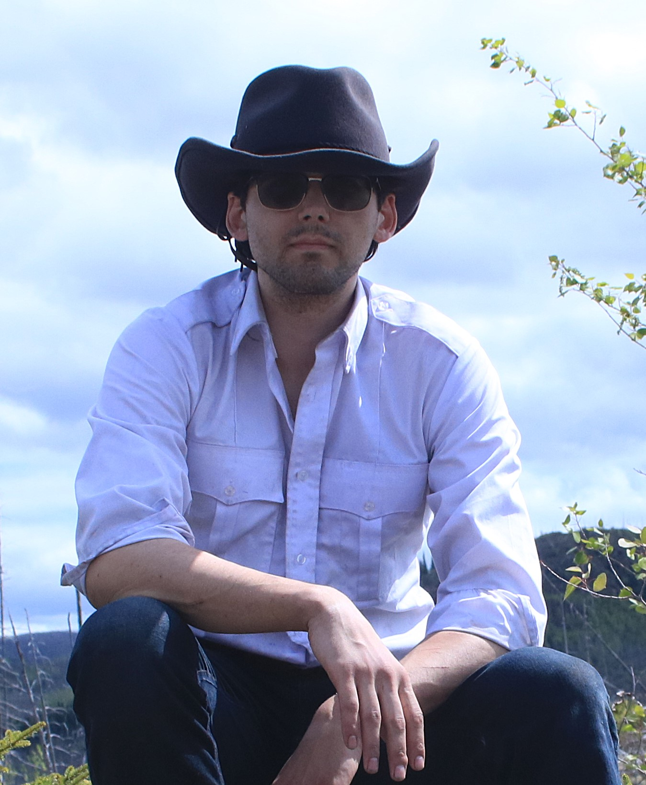

Bonjour et bienvenue sur LE SITE DE GAB.Je m'appelle Gabriel Marie Lavoie-St-Gelais. Né en 2001 sur la Côte-Nord du Québec, j’ai grandi à Sept-Îles, entre les épinettes noires et le bruit des goélands. Aujourd’hui, je poursuis des études en mathématiques à l’Université Laval, où je m’implique aussi comme apprenti-chercheur et directeur d’un projet de fabrication de télescopes au sein du Groupe Aérospatial de l’Université Laval.
Mais mon terrain de jeu ne se limite pas aux salles de classe. J’ai une curiosité insatiable pour tout ce qui touche à l’exploration, la recherche et la création. Ce site est né du besoin de partager ces multiples facettes — mes projets personnels, mes expériences, mes trouvailles — avec quiconque est curieux de les découvrir.
Une partie de moi est restée profondément liée à la nature nordique. J’aime partir à la recherche de cratères de météorite et de formations géologiques méconnues, en parcourant les territoires oubliés de la Côte-Nord. Vous trouverez ici quelques récits de ces expéditions, ainsi qu’une sélection de photos sur mon compte Flickr.
J’écris aussi. Depuis plusieurs années, je travaille sur un livre qui me tient à cœur : Le journal de bord du capitaine Walker. Vous pourrez en lire quelques extraits sur ce site.
Je m’intéresse également à la sécurité physique, en particulier à l’analyse de failles dans l’organisation des systèmes d’accès. Vous trouverez sur ce site quelques papiers que j’ai rédigés à ce sujet.
Et bien sûr, il y a les mathématiques — mon langage de prédilection pour penser, modéliser, chercher. Dans la section correspondante, vous trouverez plusieurs de mes papiers de recherche, tous liés à des questions qui me passionnent.
Bonne exploration.